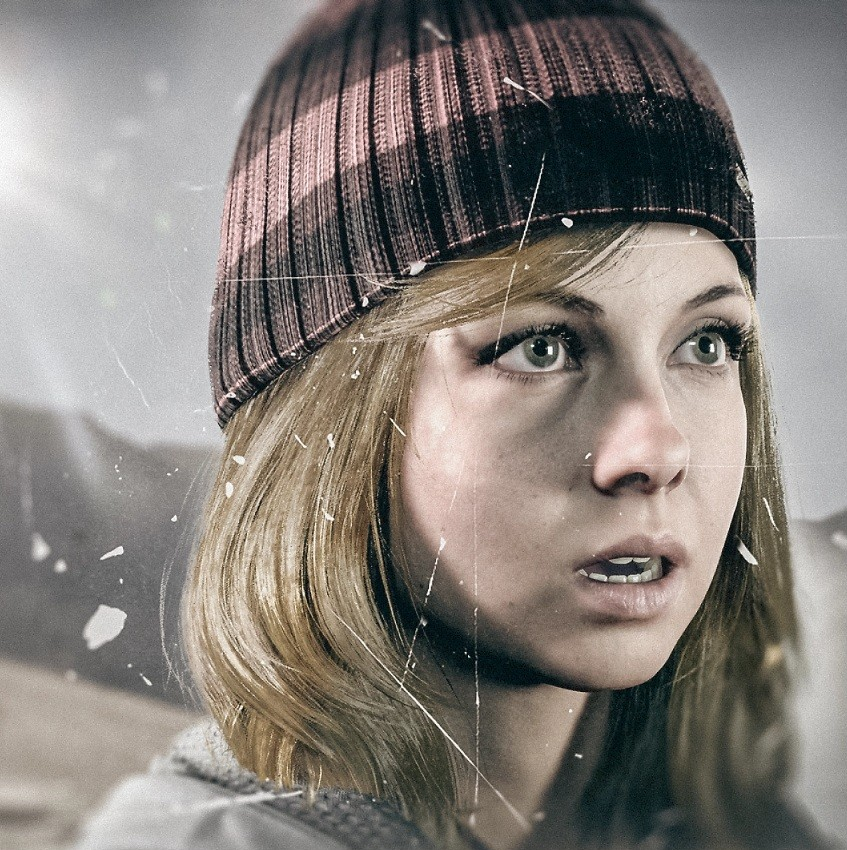
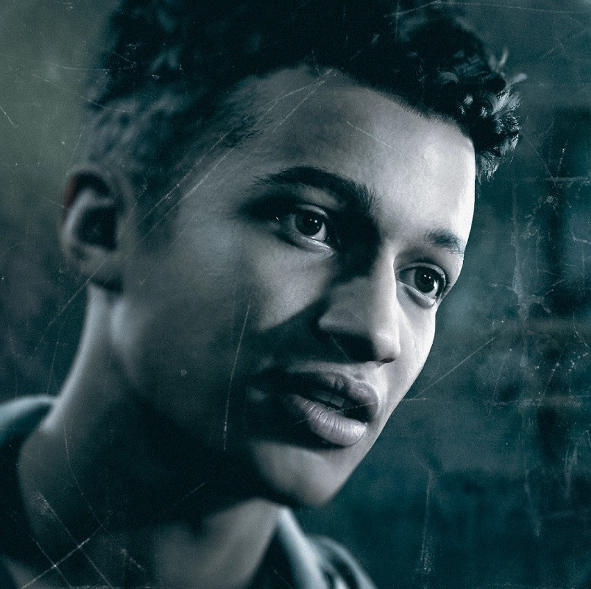

Josh
O cinéfilo Josh é irmão das gêmeas Hannah e Beth Washington, que desapareceram do chalé da família em Blackwood
Mountain depois de uma brincadeira sair do controle durante uma viagem de inverno com amigos. Um ano depois,
Josh, ainda com dificuldade para lidar com o desaparecimento das irmãs, convida os mesmos amigos a voltar ao
chalé, prometendo uma noite inesquecível.
Sam
A pacifista Sam é calorosa, bondosa e tem uma ótima relação com todos os membros do grupo. Ela vê o retorno
aochalé como uma chance de se aproximar dos amigos e deixar os acontecimentos trágicos do passado para
trás.Apesar da aversão a violência, Sam não se assusta com qualquer coisa e mantém o foco sob pressão.

Mike
Mike é bonitão, carismático e namorador em série, com aversão a compromisso. Atualmente em um relacionamento
com Jessica, depois de se separar de Emily, ele tem um histórico de causar atritos entre o grupo. No entanto,
quando as coisas começam a fugir do controle, o desejo que Mike tem de ser visto como homem de atitude revela o
que ele tem de melhor.
Emily
O estilo de Emily, uma aficionada por moda, é tão afiado quando a língua dela. O que a motiva a retornar ao
chalé é o desejo de separar seu ex-namorado, Mike, da nova namorada, Jessica, uma amiga próxima de Emily.
Chris
Com aspiração de se tornar designer de aplicativos, o fã de tecnologia Chris é considerado o nerd do grupo.
Além disso, ele é espirituoso, leal e inteligente, embora o medo do fracasso o torne incapaz de confessar seus
verdadeiros sentimentos para Ashley, por quem há tempos ele nutre uma paixão.

Ashley
A imaginação hiperativa de Ashley, que vive rodeada de livros, é perfeita para a carreira de escritora com a
qual ela sonha, mas também significa uma aversão a qualquer coisa minimamente assustadora. Ela é apaixonada por
Chris, seu companheiro de estudos, mas acredita erroneamente que o sentimento não é recíproco.

Matt
A vida acadêmica de Matt não se compara aos talentos dele no campo de futebol, por isso o gigante gentil espera
chegar à faculdade com uma bolsa de esportes. Ele é fervorosamente leal à nova namorada, Emily, sem saber que
está sendo usado como peão no joguete dela para reatar com Mike.
Jess
A animada Jessica tem uma personalidade extravagante e adora flertar, o que levou Mike a trocar Emily por ela.
Antes disso, ela e Emily eram muito amigas. Ironicamente, foi Jessica quem planejou a brincadeira fatídica com
Hannah Washington, para proteger o relacionamento de Emily com Mike.